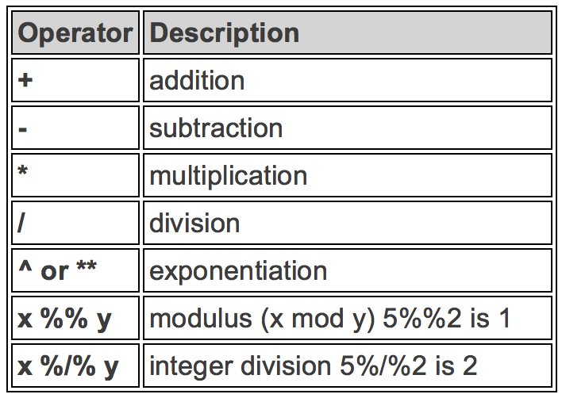
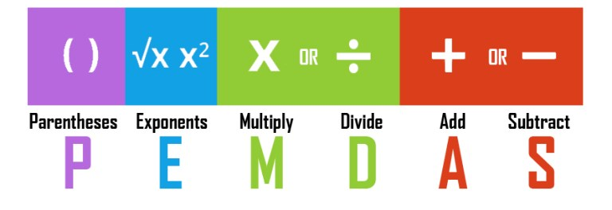
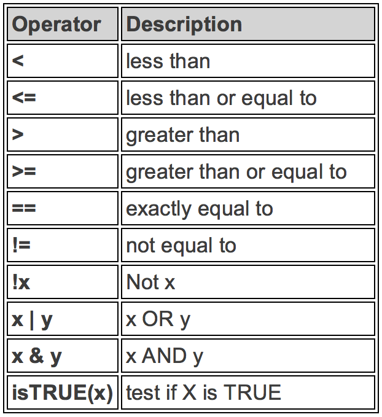
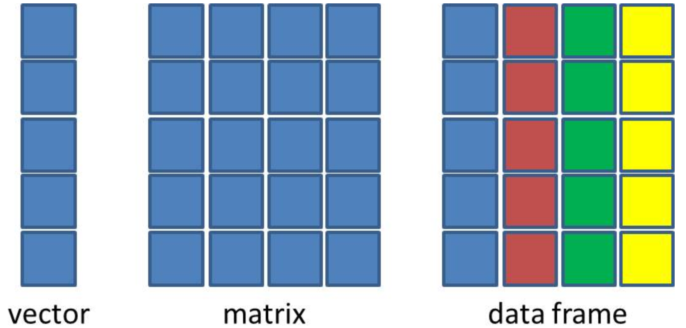

You RRR a Beginner: Data Types and Structures 👨💻
MATH 4720/MSSC 5720 Introduction to Statistics
Dr. Cheng-Han Yu
Department of Mathematical and Statistical Sciences
Marquette University
Department of Mathematical and Statistical Sciences
Marquette University
R is a Calculator - Arithmetic Operators

R is a Calculator - Examples
- We have to do the operation in the parenthesis first

R Does Comparisons - Logical Operators

5 <= 5[1] TRUE5 <= 4[1] FALSE# Is 5 NOT equal to 5? FALSE
5 != 5[1] FALSEBuild-in Functions
- R has lots of built-in functions, especially for mathematics, probability and statistics.
Creating Variables
A variable stores a value that can be changed according to our need.
Use
<-operator to assign a value to the variable. (Highly recommended👍)
x <- 5 ## we create an object, value 5, and call it x, which is a variable.
x ## type the variable name to see the value stored in the object x[1] 5(x <- x + 6) # We can reassign any value to the variable we created[1] 11x == 5 # We can perform any operations on variables[1] FALSElog(x) # Variables can also be used in any built-in functions[1] 2.397895Object Types
Types of Variables
Use
typeof()to check which type a variable belongs to.Common types include
character,double,integerandlogical.Check if it’s of a specific type:
is.character(),is.double(),is.integer(),is.logical().
Variable Types in R and in Statistics
Type
characterandlogicalcorrespond to categorical variables.Type
logicalis a special type of categorical variables that has only two categories (binary).
- Type
doubleandintegercorrespond to numerical variables. (an exception later)- Type
doubleis for continuous variables - Type
integeris for discrete variables.
- Type
Create a variable
agethat stores your age. Check what type it is.Create a variable
namethat stores your name. Check its type.Create a variable
is_malethat stores whether you are male (true/false). Check its type.
02:00
R Data Structures
Vector
-
Factor
-
Data Frame
(Atomic) Vector
To create a vector, use
c(), short for concatenate or combine.All elements of a vector must be of the same type.
Operations on Vectors
- We can do any operations on vectors as we do on a scalar variable (vector of length 1).
Recycling of Vectors
- If we apply arithmetic operations to two vectors of unequal length, the elements of the shorter vector will be recycled to complete the operations.
Subsetting Vectors
To extract element(s) in a vector, use a pair of brackets
[]with element indexing.The indexing starts with 1.
Factor
- A vector of type
factorcan be ordered in a meaningful way. Create a factor byfactor().
[1] med high low
Levels: high low med- It is a type of integer, not character. 😲 🙄
Data Frame: The Most Common Way of Storing Datasets
A data frame is of type list of equal-length vectors, having a 2-dimensional structure.
More general than matrix: Different columns can have different types.
Use
data.frame()that takes named vectors as input “element”.
## data frame w/ an dbl column named age and char columns gen and col.
(df <- data.frame(age = c(19, 21, 40), gen = c("m", "f", "m"), col = c("r","b","g"))) age gen col
1 19 m r
2 21 f b
3 40 m gstr(df) ## use $ to represent column elements 'data.frame': 3 obs. of 3 variables:
$ age: num 19 21 40
$ gen: chr "m" "f" "m"
$ col: chr "r" "b" "g"What happen if we create a data frame without column names?
Data Structure Comparison

Properties of Data Frames
Data frame has properties of matrix.
Subsetting a Data Frame
df age gen col
1 19 m r
2 21 f b
3 40 m g## Subset rows
df[3, ] age gen col
3 40 m g## Subset columns
df[, "age"][1] 19 21 40df$age[1] 19 21 40- Create a vector object called
xthat has 5 elements 3, 6, 2, 9, 14. - Compute the average of elements of
x. - Subset the
mtcarsdata set by selecting variablesmpganddisp. - Select the cars (rows) in
mtcarsthat have 4 cylinders.
05:00